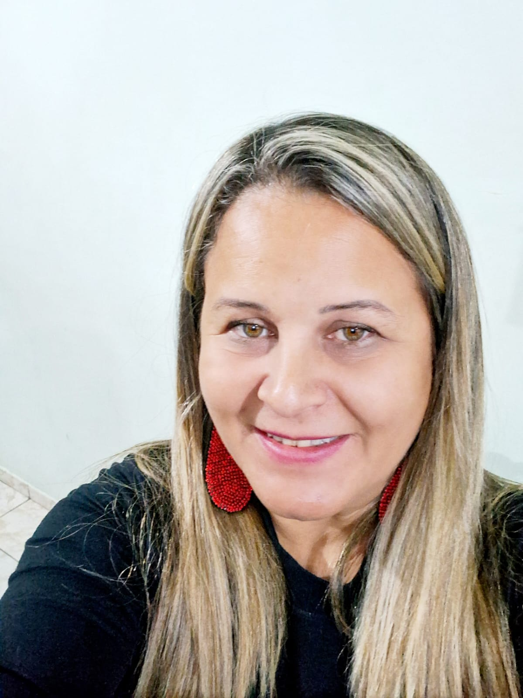
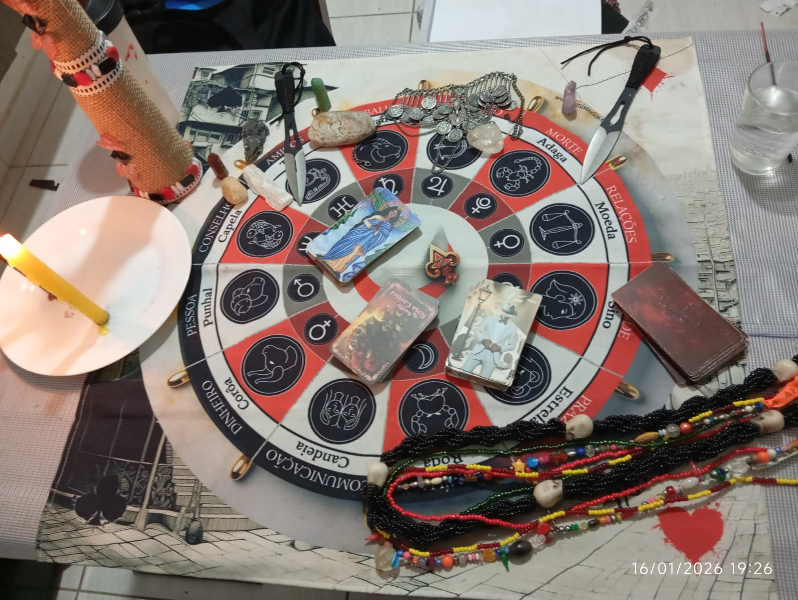
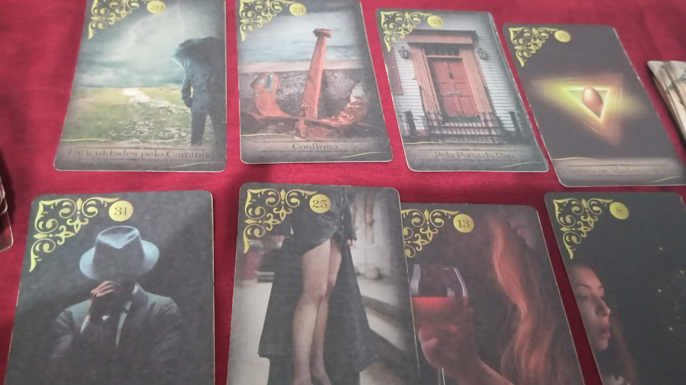

Tarológa e Sensitiva
Clareza para os seus caminhos, através das cartas
Simone conduz consultas de Tarot com escuta atenta e leitura sensitiva, buscando trazer orientação para as questões de amor, trabalho, dinheiro e caminhos espirituais. Atendimento 100% online, sob agendamento.
Atendimento online · Sorocaba, SP


"Cada consulta é um espaço de escuta — as cartas abrem o caminho, mas quem decide é sempre você."
Simone atende consulentes que buscam entender melhor um momento de vida, tomar uma decisão ou simplesmente ter mais clareza sobre o que sentem. O trabalho une a leitura do Tarot à sensitividade, com respeito pela história de cada pessoa que senta à mesa — mesmo que essa mesa, hoje, seja uma videochamada.
As consultas são feitas com cuidado e sigilo, sempre sob agendamento prévio, para que haja tempo e presença para o que você traz.
Guias e leituras disponíveis
Cada consulta pode ser conduzida com diferentes baralhos e entidades de trabalho, de acordo com a questão trazida.
Zé Pilintra
Leitura ligada à malandragem, aos caminhos abertos e à proteção nas questões práticas do dia a dia — trabalho, dinheiro e decisões que exigem jogo de cintura.
Maria Padilha
Leitura voltada às questões de amor, poder pessoal e conquista — indicada para quem busca força e clareza para retomar as rédeas da própria vida.
Cigana
Leitura tradicional cigana, usada para dar panorama geral sobre um período — bom para quem quer entender o momento presente como um todo.
Rosa Caveira
Leitura direta e sem rodeios, indicada para quem quer respostas objetivas sobre uma pergunta específica.
Como funciona o atendimento
O atendimento é feito de forma online, sob agendamento prévio pelo WhatsApp.
Chame no WhatsApp
Envie uma mensagem contando, em poucas palavras, o que você gostaria de trazer para a consulta.
Agende um horário
Simone combina com você o melhor dia e horário para o atendimento, de acordo com a agenda.
Consulta online
No horário marcado, a leitura acontece por chamada, com o baralho mais indicado para a sua questão.

Indique e ganhe
A cada 2 indicações suas que fecharem uma tiragem com Simone, você ganha 1 tiragem gratuita.
Saber mais no WhatsAppAtendimento online, sempre sob agendamento
Sorocaba — SP
Mesmo à distância, o cuidado é o mesmo de uma consulta presencial. Basta chamar no WhatsApp para combinar o seu horário.
Pronta para te ouvir
Chame Simone no WhatsApp para agendar sua consulta e entender melhor os caminhos à sua frente.
Agendar pelo WhatsApp